FMOD Studio User Manual 2.02
- Welcome to FMOD Studio
- FMOD Studio Concepts
- Organizing the Project
- Authoring Events
- Working with Instruments
- Managing Assets
- Parameters
- Getting Events into Your Game
- Mixing
- The Sandbox
- Editing During Live Update
- Profiling
- Dialogue and Localization
- Using Source Control
- Supporting Downloadable and User-generated Content
- Advanced Topics
- Quick Start Tutorial
- Event Macros Drawer Reference
- Instrument Reference
- Plug-in Reference
- Modulator Reference
- Parameters Reference
- Scripting
- Scripting API Reference
- Keyboard Shortcut Reference
- Troubleshooting
- Glossary
- Appendix: Celeste Getting Started Guide
- Appendix: Reaper Integration
4. Authoring Events
This chapter explains how to create events, trigger-able and instance-able units of sound content, to use in your game. It covers how to import audio files, how to add them to instruments so that they can be used in events, how to process and route the outputs of those instruments, and how to use timelines and parameters to change the behavior of events as your game runs.
Almost all of these tasks are performed in the event editor window, which is the window that first appears when you load a project in FMOD Studio.
Events are a fundamental part of any FMOD Studio project, so it is recommended you read this chapter before proceeding to later ones.
4.1 Key Event Concepts
Certain concepts come up frequently when dealing with events.
Events can be 2D or 3D. An event is 3D if it contains anything that makes its behavior depend on its position relative to the listener, and 2D if it does not exhibit such behavior. A 2D event can be made 3D by adding a spatializing effect to any of its tracks or by giving it a built-in parameter, and a 3D event can be made 2D by removing all spatializing effects and built-in parameters. The "New 3D Timeline" and "New 3D Action" commands differ from the "New 2D Timeline" and "New 2D Action" commands only in whether the new events contain spatializer effects when created.
Instruments can be placed on action sheets, timeline sheets, and parameter sheets. Each of these sheet types is described later in this chapter, and can coexist in an event in any combination. The "New 2D Timeline" and "New 3D Timeline" commands differ from the "New 2D Action" and "New 3D Action" commands only in which sheet types the new events contain when first created.
When an FMOD Studio event is called in your game's engine, this creates an instance of said event. Once created, this instance is independent of the original event and of any other instances of that event that might be playing. Once it is finished, that instance is then removed from memory. This means that different instances of one event can have different local parameter values, instead of needing a different event for each and every event instance with different parameter values. As an example, should your game require footstep sounds for all enemies on screen; rather than creating multiple events for each enemy, the same event can be shared across all enemies - each playing in a different 3D location and having different parameter values passed in for floor surfaces and velocity/pitch of footsteps.
4.1.1 Referenced Events
An FMOD Studio event can reference other FMOD Studio events in the same project. This allows an event to create and stop instances of the other events it references. In this manner, it is possible to combine a number of different events to achieve a vast range of output results.
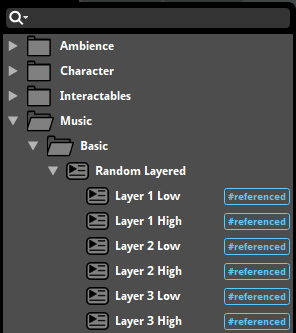
Each referenced event can be opened in a separate tab or window for ease of workflow and editing.
To create a referenced event, drag and drop an event from the event browser onto an audio track or action sheet in the event editor window. This creates an event instrument, which will play an instance of the event it references when triggered.
By default, built banks include any referenced events and their sample data for events assigned to that bank. To include referenced events in only the banks to which they are explicitly assigned, please see the Including Referenced Events in Banks section of the Getting Events into Your Game chapter.
4.1.2 Nested Events
A nested event is a kind of referenced event that can only be referenced by its parent event and does not route into the project's mixer. Instead, it outputs its signal into its parent event.
Nested events are displayed below and slightly to the right of their parent events in the events browser, similarly to how other events are displayed below and slightly to the right of their containing folders.
To create a nested event, either right click on any audio track or action sheet and select "Add Event Instrument" from the context menu, or right click on a multi instrument's or scatterer instrument's playlist and select "Add Event Instrument".
For all information on how to use referenced events, please see the the referenced events section.
4.2 Anatomy of the Event Editor
FMOD Studio's event editor window consists of four main sections, each of which serves a different role in the creation and editing of events.
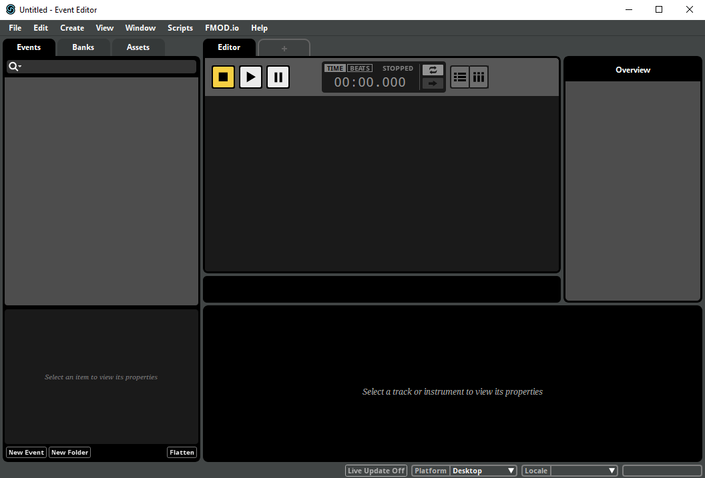
The editor, at the center of the window, is the largest of these areas. As the name suggests, the editor is used to edit the content of events. It contains the transport controls and parameter controls for the currently displayed event, and can display any of an event's action sheets and parameter sheets.
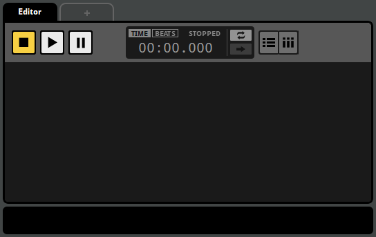

 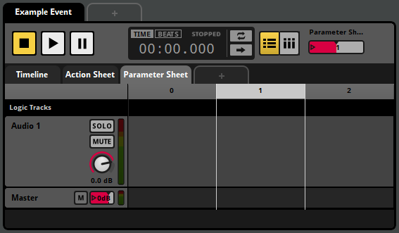
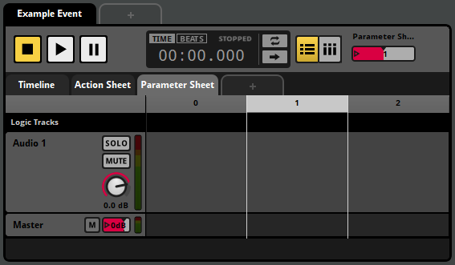
At the left side of the window are the browsers. These are used to organize your project's events, assets and banks.
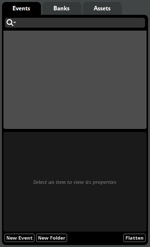
You can hide or show the browsers by selecting "View > Browser", or by pressing the B key.
The overview is at the right side of the window. It allows you to view certain properties of events, and to audition the positional behaviors of 3D events.

You can show and hide the overview by selecting "View > Overview", or by pressing the P key.
The deck, located along the bottom of the window, displays the properties of the currently selected instrument, track, or parameter.
You can show and hide the deck by selecting "View > Deck", or by pressing the D key.
4.3 Auditioning Events
You can audition any event displayed in the editor by clicking on the play button in the transport controls.

When you press the play button, the playback position on the timeline begins to advance, and action sheets begin playing their instruments. When the playback position of any parameter sheet in a playing event overlaps an instrument, that instrument begins playing. Playing instruments on tracks route their output to those tracks, and playing insturments in action sheets route their output to the master track.
Events stop playing automatically when there is no further content on the timeline and no content of the event is currently playing. This reflects how events automatically stop in-game.
You can also stop an event manually by clicking on the stop button.

Clicking on the stop button causes the event to begin its stopping behavior, equivalent to calling FMOD_STUDIO_STOP_ALLOWFADEOUT in your game's code. For most events, the stopping behavior is simply to abruptly stop producing output, but events with AHDSR modulators may have a less immediate stopping behavior. For more information about AHDSR modulators, see the AHDSR Modulator section of the Modulator Reference chapter.
Clicking on the stop button while the event is already stopping will cause it to stop abruptly, equivalent to calling FMOD_STUDIO_STOP_IMMEDIATE in your game's code.
Once an event is stopped, clicking on the stop button resets both the playback position and the cursor of the timeline to the beginning of the timeline.
Clicking on the pause button causes the event to be paused.

Pausing an event causes the timeline playback position to stop advancing. In addition, a paused event produces no output, similar to a stopped event. Unlike a stopped event, however, a paused event can resume playing as if it had never stopped if it is unpaused. (This is true even in-game. See Studio::EventInstance::setPaused for more information about pausing events in-game.)
To unpause a paused event, click on the play or pause buttons.
The follow playback position and loop playback toggle buttons located to the right of the timecode display alter the way events behave when auditioned in FMOD Studio, but not when played in your game.
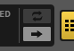
Follow playback position mode causes the editor to scroll such that the playback position remains visible. It also causes transition timelines to automatically expand as the playback position enters them.
Loop playback mode causes the event to automatically begin auditioning again from the beginning if it automatically stops due to there being no content currently playing and no further content on the timeline.
You can audition multiple events by opening multiple event editor windows, or multiple tabs within the same event editor window. It is not possible to audition two copies of the same event; even if you open the event in two separate event editor windows or tabs, both windows or tabs will manipulate the same event instance. However, it is possible to simultaneously play multiple different instances of an event in game, by using command instruments or event instruments to spawn event instances, or by using the sandbox.
The event instance displayed in the event editor window is a specific event instance that exists for the purpose of auditioning in that window. It does not display other instances of the event that may exist, including instances spawned by command instruments or event instruments, instances playing in the sandbox, and instances playing in your game. As such, while the event editor window allows you to edit the content of an event, it does not indicate or allow you to change the parameter values and playback states of instances of that event, other than the one instance it displays.
4.3.1 Soloing and Muting Tracks
The solo and mute buttons located on the head of each audio and return track, and the monitor button located on the head of the master track, allow you to control which tracks are included in an audition.
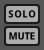
The mute toggle button, if toggled on, excludes the associated track from outputting any audio.
The solo toggle button, if toggled on, excludes all audio and return tracks that don't have their solo button toggled on from auditioning. You can toggle the solo buttons of multiple tracks by holding down the Shift key as you click on their solo buttons.
The monitor toggle button toggles on and off all toggled on mute and solo buttons in the event. Clicking on the monitor button when no mute or solo buttons are toggled on toggles on the mute and solo buttons that were toggled off when the monitor button was last clicked. The monitor toggle button is only available if any of the solo or mute buttons have been toggled on.
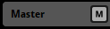 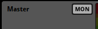
Instruments on action sheets are not on tracks, and so cannot be soloed or muted.
4.3.2 The 3D Preview
When viewing a 3D event, the 3D preview appears in the overview pane. The 3D preview is a tool for auditioning the 3D properties of an event. By interacting with the emitter, you can change the position of the emitter relative to the listener for the purposes of auditioning.
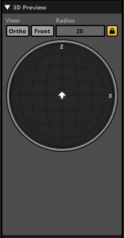
The 3D preview represents a top-down view of a spherical area surrounding the listener. The radius of this circle is equal to the event's max distance, as defined by either the max distance property of the event's spatializer effect or by the maximum value of its built-in distance parameter. The listener is always located at the exact center of the circle, facing forward ('up' on the 3D preview).
The arrow-shaped icon represents the event emitter, and the direction that the arrow points represents the direction the emitter is facing. By default, the emitter is positioned in the same location as the listener and facing the same direction. You can change the position of the emitter by clicking and dragging it to any new location in the circle, and you can rotate the emitter by hovering the mouse cursor over the 3D preview and spinning the mouse wheel. Holding down the Ctrl key while dragging the listener changes the emitter's elevation. (If the current elevation of the emitter is above or below that of the listener, the difference in elevation is indicated by a dashed line.) Double-clicking on the 3D Preview returns the emitter to its default position and facing.
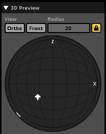
The light-gray circle surrounding the arrow represents the event's envelopment, as defined by the sound size property of the event's spatializer effect. The light gray arc or circle that appears around the edge of the 3D preview represents the current extent of the event. If a spatializer's minimum extent has been set to a value greater than 0 degrees, the minimum extent is shown as a white arc overlapping the light gray arc that represents current extent.
4.4 Action Sheets
An action sheet is a playlist of instruments to trigger when an event is started, and can be added to any event. Many game projects include "fire and forget" events that play when they're triggered, and require no further input after that. Action sheets exist to support this kind of event.
Action sheets play the instruments in their playlists either concurrently or in consecutive order. You can change which of these an action does by using the concurrent/consecutive drop-down menu.
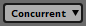 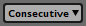
A concurrent action sheet triggers all the instruments in its playlist at the same time as soon as the event starts.
A consecutive action sheet triggers its instruments sequentially, starting with the first. Whenever an instrument finishes playing, the next begins, until all the instruments have finished.
Action sheets can contain any type of instrument except scatterer instruments and plug-in instrument. Instruments on an action sheet cannot be given trigger conditions. For more information about specific types of instrument, see the Instruments section of this chapter.
4.5 Parameter Sheets
A parameter sheet is a component of an event that allows a parameter to trigger instruments. Some events need to behave differently depending on the state of your game, or to respond to changes in your game's state by changing what they're doing. Parameter sheets exist to support this kind of event.
If you view a parameter sheet in the editor pane, you'll see a ruler at the top of the editor. This ruler represents the range of values the sheet's associated parameter can potentially have. Below the ruler are the event's logic tracks and event tracks. An instrument or logic marker's position under the parameter ruler defines the range of parameter values that trigger the instrument.
Parameter sheets can contain any type of instrument.
There are three broad categories of parameter: Timeline parameters, user parameters, and built-in parameters:
- Timeline parameters. These begin at zero when the event starts, and advance at a rate of one per second for as long as the event continues to play. Timeline parameter sheets are the only kind of parameter sheet able to support logic markers, allowing them to contain complex decision trees.
- User parameters. These represent parameters defined by you, and updated by your game's code. Accordingly, they can be customized to represent any variable in your game.
- Built-in parameters. These are automatically updated based on the position of the event instance relative to the listener in your game's virtual 3D space.
For more information about specific types of parameter, see the Parameters section of this chapter.
4.6 Instruments
Instruments are the source of audio in an event, and can also trigger behavior through snapshots and commands. They can be triggered by the action sheets or parameter sheets of events, and appear as colored boxes (called trigger regions) on the action sheets, audio tracks, and master tracks of an event when that event is displayed in the editor.
To add an instrument to an event, right-click on one of the event's action sheets or tracks and select the type of instrument to add from the context menu. This adds an instrument of the chosen type to the sheet or track.
Triggering an instrument causes it to begin playing its content, to start its associated snapshot, or to run its command. The output of an instrument that produces audio is routed into the track the instrument is on, or into the master track if the instrument is on an action sheet.
You can view the properties and content of an instrument in the deck by clicking on the instrument in the event editor window's editor.
Instruments on a parameter sheet can be edited in bulk by holding the Ctrl modifier key and selecting each instrument you wish to edit. Common properties shared between the instruments are highlighted in gold in the deck, and editing these properties edits them across all selected instruments. If properties are not common to all selected instruments, such as a playlist selection mode when selecting a multi instrument and a single instrument, then these properties are not highlighted.
4.6.1 Triggering Instruments
The means by which an instrument can be triggered depends on whether it's on a parameter sheet or an action sheet.
An instrument on an action sheet is only displayed on that action sheet. When it is triggered depends on whether the action sheet is consecutive or concurrent: A concurrent action sheet triggers all the instruments in its playlist at the same time as soon as the event starts; whereas a consecutive action sheet plays the instruments in its playlist one at a time in the order they appear, and ends once all of them have finished playing.
An instrument on a parameter sheet is only displayed on that parameter sheet. It is triggered when the playback position of the parameter falls between the start and end of the instrument's trigger region, and the instrument's other trigger conditions are met. If the playback position of the parameter sheet subsequently moves off the instrument's trigger region, the instrument is untriggered and stops producing output either immediately or after a period of time, depending on its content, properties, and modulators.
4.6.2 Types of Instrument
There are various types of instrument, each with slightly different behavior and capabilities:
- Single instruments are one of the most commonly used types. When triggered, a single instrument produces output based on a single specified audio file.
- Multi instruments are similar to single instruments, but feature a playlist of options instead of just one audio file.
- Event instruments create instances of events elsewhere in the project. The output of the new event instance is routed into the track that holds the event instrument, instead of into the mixer.
- Scatterer instruments are similar to multi instruments, but feature spatial and temporal randomization at the cost of being more complex.
- Programmer instruments pass a callback to your game's code when triggered, allowing you to specify an audio file to play in your game's code. This is most useful for situations when there are a very large number of audio files that could be selected from, such as when playing lines of dialogue in games with conversation systems.
- Command instruments do not produce audio. Instead, they issue commands to your FMOD Studio project, allowing the event to control other event instances throughout your game. Command instruments can be used to start and stop other instances of other events, or to change the values of local and global parameters.
- Snapshot instruments do not produce audio. Instead, they create and play instances of snapshots, allowing the event to control the mix of your entire game.
For more information about specific types of instrument, see the Working with Instruments and Instrument-reference chapters.
4.6.3 Synchronous versus Asynchronous
All instruments are either synchronous or asychronous. Single, multi, and programmer instruments may be either synchronous or asychronous. Event, scatterer, command, and snapshot instruments are always asynchronous.
Asynchronous instruments act like switches. When they're overlapped by the playback position, they play their content. Then, when they're no longer overlapped by the playback position, they stop.
Synchronous instruments behave like asynchronous instruments, but always play the part of the waveform that the playback position is over. This means that you can move the playback position within the instrument in order to change which part of the waveform plays. Only instruments on the timeline parameter sheet can be synchronous.
To change whether an instrument is synchronous or asynchronous, click on the instrument to display its properties in the deck, then click on the "Async" toggle button. This button only appears when it is possible to switch the instrument between synchronous and asynchronous.
4.7 Tracks
Tracks are the internal ligature of an FMOD Studio event. They act as a mixer within an event instance, allowing you to collect and mix the outputs of the event's instruments, apply effects, and create a mix that forms an event's final output.

All newly created audio and return tracks are routed the event's master track. For information about routing them to other audio tracks, see the Routing section of this chapter.
You can color-code any track other than an automation track by right-clicking on it and selecting "Set Color" from the context menu. Assigning a color to a track does not affect its in-game behavior, but can help make your events easier to understand at a glance.
4.7.1 Audio Tracks
Audio tracks act like group buses in a mixer. They receive inputs from a variety of sources, create a submix, alter that submix with effects, and output the result to another track. The inputs of an audio track come from the instruments on that track and from any other tracks that are routed into it.
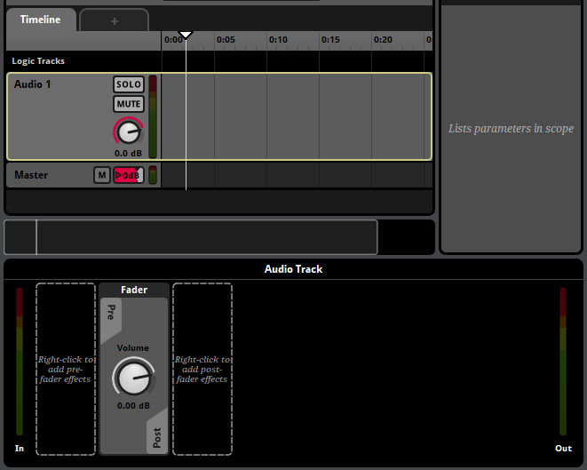
An event may contain any number of audio tracks, or none. Audio tracks may be added or removed by right-clicking on a track head and selecting "Add Audio Track" or "Delete" from the context menu.
4.7.2 Return Tracks
Return tracks act like return buses in a mixer. They receive inputs from sends, create a submix, alter that submix with effects, and output it. The inputs of an audio track come from the sends on tracks within the same event instance. An event may contain any number of return tracks, or none.
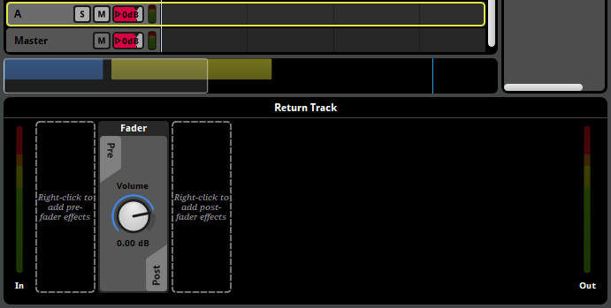
An event may contain any number of return tracks, or none. Return tracks may be added or removed by right-clicking on a track head and selecting "Add Return Track" or "Delete" from the context menu.
4.7.3 Master Track
The master track is a special kind of audio track that cannot be routed into other tracks. Instead, its output is always routed to the project mixer.
An event always contains exactly one master track. Master tracks cannot be deleted, and additional master tracks cannot be added to an existing event.
In all other ways, the master track behaves like an audio track. Its inputs come from the instruments on that track, from any other tracks that are routed into it, and from instruments on the event's action sheets.
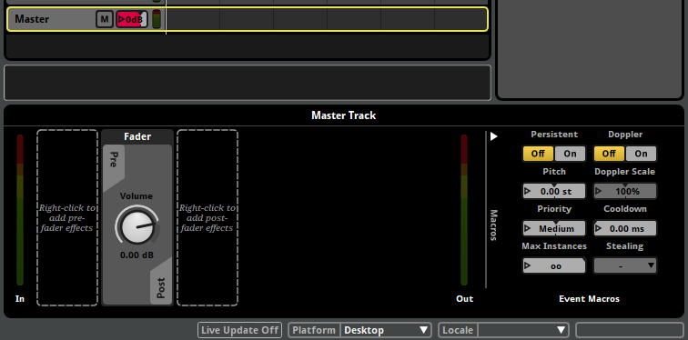
4.7.4 Automation Tracks
Automation tracks are a special kind of track that do not act as buses. Instead, they display automation curves. Automation tracks are only shown in the event editor window's editor under certain specific circumstances. For more information about automation tracks, see the Automation and Modulation section of this chapter.
4.7.5 Track Signal Chains
Audio tracks, return tracks and the master track all have signal chains that can contain effects. For more information about signal chains, see the Signal Chains section of this chapter.
4.8 Routing
Within an event, signals originate from instruments. The output of each instrument is routed into the track that instrument is on, or into the master track if the instrument is on an action sheet. These tracks, in turn, produce outputs that may be routed into other audio tracks, the master track, or to the mixer.
The signals routed into each audio, return and master track are used to produce a submix, which in turn forms the output of the track. The master track's output always routes into the project mixer.
By tweaking and customizing an event's routing, you can change which tracks' signal chains each track's output is processed by. This allows you to create events where different content is processed in different ways. For more information about signal chains, see the signal chains section of this chapter.
By default, the output of audio tracks and return tracks is routed into the event's master track. You can set any return or audio track to route into a different audio track by right-clicking on its track head and selecting the "Output" menu item from the context menu.
Unlike audio tracks, return tracks do not receive input from instruments on the track. Instead, you can create sends to those return tracks in any track's signal chain. Sends create a duplicate of the signal at their position, and this duplicate signal is routed to a specified return track in the same event or to a return bus in the project mixer. For more information about the project mixer, see the Mixing chapter.
The master track's output (also known as the event output) may be routed into any group bus or master bus in the project mixer. By default, every event is routed into the project master bus. The routing of an event can be changed in the routing browser. For more information about routing in the mixer, see the Mixing chapter.
4.9 Signal Chains
Each audio, return, and master track has a signal chain of sends and effects that route and process the signal passing through it. You can view any track's signal chain in the deck by clicking on the track's head.
You can add effects, sends, and sidechains to a signal chain by right-clicking on an empty space in the deck to open the context menu, then selecting one of the "Add Effect", "Add Send", "Add Sidechain", "Insert Effect", "Insert Send", or "Insert Sidechain" menu items. When adding an effect, send, or sidechain, the newly added item will appear near the place where you right-clicked.
You can edit the properties of an effect by adjusting their controls where they appear in the deck. Note that the basic property values, modulators, and automation of a preset effect are shared amongst all instances of that preset effect, so any adjustment to the controls of a preset effect affects all instances of that preset effect in your project.
Effects in a signal chain are applied in the order they appear in the deck, running from left to right. This means that if a send is positioned to the left of an effect, the duplicate signal from that send will be free of that effect. Similarly, if a send is positioned to the right of the fader, the duplicate signal from that send will include gain or ducking from that fader. You can change the order of effects, sends, sidechains, and the fader in a signal chain by clicking and dragging them to new positions.
Effects may be bypassed. Bypassed effects continue to upmix or downmix the channel format as usual, but do not otherwise process the signal. To bypass an effect or make an effect no longer bypassed, right-click on the effect and select "Bypass" from the context menu.
At the end of each signal chain is the panner. The exact appearance of the panner depends on the track's output format.
4.10 Parameters
Every event has a series of variables known as parameters. All event content not on action sheets is controlled by parameters, and setting the values of parameters is the only way to influence the behavior of a playing event. The timeline that appears in some events is just a special kind of parameter that automatically advances over time while the event plays.
Parameters can also be found in the mixer. In the mixer, global parameters can be used to control bus properties and snapshots, and local parameters can be used to control snapshot instances.
With the exception of timeline parameters, every parameter in your project is based on a preset parameter. Preset parameters allow you to quickly add very similar parameters to a large number of events. You can view your project's preset parameters in the preset browser window.
A parameter is automatically added to an event if it is used by at least one parameter condition, automation curve, or parameter sheet in that event.
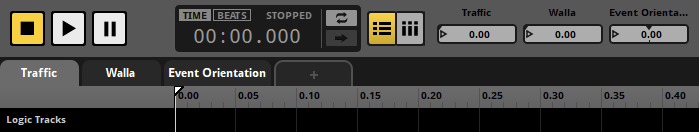
Every parameter added to an event is represented by a number box in the transport bar. Each number box indicates the value to which the corresponding parameter was most recently set. Under most circumstances, the current value is equal to this value. When the current value of a parameter differs from the value to which it was most recently set, the current value is indicated by an orange dot on the number box.
The current and set values of a local parameter may vary from one event to another, and from one instance of an event to another. The current and set values of a global parameter are shared between all parameters that reference the same global preset parameter.
When your game is running, the value of any parameter (other than read-only parameters, held parameters in playing event instances, and non-exposed parameters in referenced events) can be changed by your game's code, as well as by command instruments. When auditioning events in the event editor, you can set the value of the displayed event instance's parameters by clicking and dragging their number boxes.
The value of a parameter may be modulated by adding a modulator to the preset parameter it references. For information about specific modulators, see the modulator reference chapter.
For more information about parameters, see the parameters chapter.
4.11 Timeline Logic
The default behavior of an event's timeline's playback position is to continuously advance. Timeline logic allows you to change this. With it, you can make the playback position jump instantly from one place to another, stop in place for a while, or even temporarily vanish from the normal timeline as it travels along an alternate transition timeline.

An event's timeline logic is defined by logic markers on its logic tracks. To add a new marker to an event while the event's timeline is displayed in the event editor window's editor, right-click on one of the event's logic tracks, then select the desired marker from the context menu.
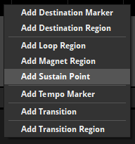
There are a number of different logic markers available.
- A destination marker is a potential destination for transition markers and transition regions.
- A destination region acts a like a destination marker, but stretches over a range of the timeline instead of existing only at a single point.
- A loop region functions as a paired transition marker and destination marker, and so causes the playback position to loop over the specified range. Like a destination marker, a loop region is also a potential destination for transition markers and transition regions.
- A magnet region causes the playback position to "jump" instantaneously to the magnet region from elsewhere on the timeline.
- A sustain point causes the playback position to pause at its location until the event instance receives a Studio::EventInstance::keyOff API call. Such an API call can be issued before the playback position reaches a sustain point and "stored up" for future use. If the sustain point utilizes a parameter condition or an event condition, the playback position will continue when these conditions are no longer met.
- A tempo marker defines the tempo of the section of timeline to its right. Tempo can be used to define quantization behavior for instruments and transition regions.
- A transition marker causes the playback position to "jump" instantaneously from the transition marker to a destination marker, destination region, loop region, or magnet region elsewhere on the timeline.
- A transition region acts like a transition marker, but stretches over a range of the timeline instead of existing only at a single point.
4.11.1 Trigger Conditions
You can set a transition marker, transition region, magnet region, or loop region to only function if certain conditions are met. This allows you to create events that behave in different ways under different circumstances.
You can view and edit the conditions of a logic marker by clicking on it. This causes its conditions to be displayed in the deck.
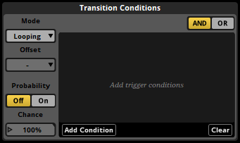
FMOD Studio supports two kinds of conditions. All conditions must be met at the same time for the marker to function.
Each transition marker, transition region, magnet region, or loop region can have a single probability condition that determines the likelihood that the timeline playback position jumps when the playback position reaches certain points. The points at which the condition is checked vary depending on the type of marker:
- Transition marker: Whenever the playback position reaches that marker.
- Transition regions: Whenever the playback position enters that region.
- Loop region: Whenever the playback position reaches the end point of that loop region.
- Magnet region: Whenever the playback position arrives somewhere outside of that magnet region.
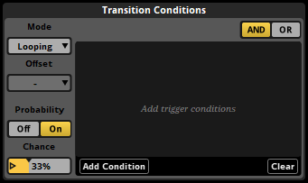
To give the selected marker a probability condition, first click on the probability toggle button where it appears in the deck to turn the marker's probability mode on, then click and drag the chance number box to the desired value.
You can also create parameter conditions for markers. A marker with parameter conditions functions only while the values of the event's parameters are within certain ranges. Parameter conditions on loop regions only affect the loop region, and not transition markers and regions linked to that loop region.
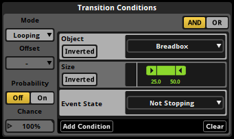
To add a parameter condition to the selected marker, click on the "Add Condition" button in the deck, then select a parameter from the menu. You can change the range of values used by an existing parameter condition by double-clicking on one of the values and entering a new one, or by clicking and dragging the handles of the ribbon slider.
Transition regions and magnet regions, unlike transition markers and loop regions, can be quantized. Quantizing a transition region or magnet region means that it will only cause the playback position to jump on the specific notes or bars to which that region is quantized. The timeline positions of beats and bars in an event are determined by the event's tempo markers. If there are no tempo markers in the event, it defaults to 120 beats per minute and 4/4 time for this purpose.
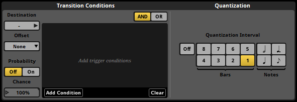
When a quantized transition region or magnet region has a probability trigger condition, the probability condition is checked once each time the playback position reaches a quantization point.
To apply quantization to a transition region or magnet region, select that region then click on the desired quantization interval button in the deck.
4.11.2 Marker Priority and Logic Points
You can use the vertical position of a marker to specify which other markers it should take precedence over. Whenever the playback position is in a location where multiple markers could make it jump to a new location, the topmost marker whose conditions are met is the one that makes it jump.
You can change the priority of markers and increase the number of logic tracks in an event by clicking and dragging markers up or down.
When multiple transition markers, transition region quantization points, or loop region end points exist at the same timeline position, the collection of markers is called a logic point. In conjunction with trigger conditions, logic points allow you to build decision trees that can send the parameter playback position to multiple different destinations depending on the circumstances.
4.11.3 Offset
Magnet regions and transition regions have a property called "offset." This property determines the exact position at which the playback position arrives within the destination region or magnet region when that region causes it to jump.
If the offset property is set to "None," the playback position arrives at the start of the magnet region, loop region, or destination region at its destination.
If the offset property is set to "Relative," the playback position jumps to a position inside the magnet region, loop region, or destination region at its destination that’s the same distance from the start of the region (as measured in bars) as the playback position was from the start of the transition region or magnet region at the start of its jump. Relative mode is frequently used with music, to allow the playback position to transition at arbitrary points within a bar or phrase and arrive at the same relative position within the destination bar or phrase.
If the offset property is set to "Inverted," the playback position jumps to a position inside the magnet region, loop region, or destination region at its destination that’s the same distance from the end of the region (as measured in bars) as the playback position was from the start of the transition region or magnet region at the start of its jump. Inverted mode is frequently used for sound effects with a wind-up section that can transition into a wind-down section at any point, such as machinery noise that takes a while to start up and can be shut down mid-way through the process.
For magnet regions, the offset property affects jumps from within one magnet region to the magnet region with the property; whereas for transition regions, the offset property affects jumps from within the transition region with the property to destination regions and loop regions.
Because the distances used by relative and inverted offset modes are measured in bars, it is possible to jump from a specific position within a bar in a region to the equivalent position within a bar in a different region, even if the two regions have different rates of BPM. This means that, if two regions have the same time signature, it is possible to jump from any beat in a bar to the equivalent beat in another bar with the same time signature but a different BPM.
4.11.4 Transition Timelines
The jumping of the playback position from a transition marker or region to its associated destination marker or loop region, or from the end point of a loop region to the beginning, or from anywhere to a magnet region, doesn't have to be instantaneous. Each transition marker, transition region, loop region, and magnet region can have a transition timeline that the playback position must travel along before arriving at its new location. Transition timelines are separate to the main timeline, and a playback position must leave the main timeline in order to travel along a transition timeline.
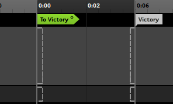
You can add a transition timeline to any transition marker, transition region, loop region or magnet region by right-clicking on the marker and selecting "Add Transition Timeline" from the context menu. A hollow circle icon appears on transition markers and transition regions that already have transition timelines.

Double-clicking on a marker that already has a transition timeline opens that transition timeline.
4.12 Automation and Modulation
Automation and modulation are ways of making a property change its value as the event plays. Almost every property of an event, instrument or effect can be automated and modulated.
4.12.1 Automation
Automation is a way of making a property change its value depending on the value of a parameter. To add automation to a property, right-click on the property control and select "Add Automation" from the context menu.

You can then add automation curves to the automation by clicking the "Add Curve" button. Adding an automation curve adds the chosen parameter to the event, if that parameter does not already exist in the event.
An automation curve is a line graph that represents the value the automated property should have for any possible value of the parameter. Each automation curve is defined by its automation points. You can adjust existing points by clicking and dragging them to new locations, and can create new points by clicking on the line. Existing points may be deleted by double-clicking on them.

A property can be automated on multiple parameters. If a property is automated on multiple parameters, the values assigned to that property by each automation curve are combined to determine the value to which the property is set.
4.12.2 Modulation
FMOD Studio features a number of modulators, each of which can change the value of a property in a different way. You can add a modulator to a property of an instrument, track, or preset parameter by right-clicking on the property, then selecting the "Add Modulation" command from the context menu. Only one modulator of each type may be assigned to any given property, but the adjustments applied by multiple modulators are cumulative with each other and with any other adjustments to the property.
Once you have added a modulator to a property, you can adjust that modulator's properties in the deck by opening the modulation drawer in the deck.
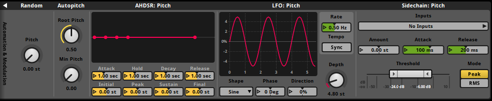
Random modulators apply a random adjustment to the property they're attached to each time a new instance of the associated instrument or event is triggered. The range of possible values of this adjustment is determined by the random modulator's property dial. When applied to volume properties, the adjustment applied by a random modulator is always a negative decibel amount. When applied to a pitch property, the adjustment could be positive or negative, and will be within the range specified by the modulator's property dial. When applied to any other property, the adjustment could be positive or negative, within the percentage of the modulated property's range specified by the modulator's property dial.
AHDSR (Attack, Hold, Decay, Sustain, Release) modulators apply an envelope to the associated property.
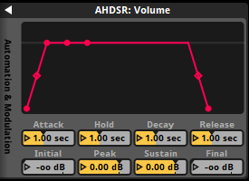
When the event or instrument to which the property belongs is triggered and begins playing, the property's value is ramped from the value specified by the modulator's initial property to that specified by its peak property over a period of time defined by its attack property. The property then remains at that value for a period of time defined by the modulator's hold property, then ramps to the value specified by its sustain property over a period of time equal to its decay property. If at any time the associated instrument or event is untriggered or stopped, the property's value is ramped from its current value to -80 dB or 0 (depending on whether the modulated property is a volume property or another property type) over a period of time specified by the modulator's release property.
An AHDSR modulator overrides the cut behavior of any instrument it is attached to, such that an instrument with an AHDSR modulator stops producing output when its AHDSR modulator reaches the end of its release period. In cases where there are multiple AHDSR modulators attached to an instrument, the time taken to stop is determined by the longest of the modulator release periods.
A sidechain modulator adjusts the value of the property it is attached to in accordance with the sidechain inputs it receives from sidechain effects elsewhere in the same event or mixer. If one of the sidechain effects assigned to it is a preset effect, it will receive input from all instances of that sidechain effect in the event.
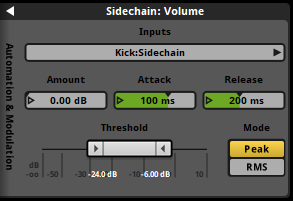
The sidechain modulator's amount property represents the maximum adjustment that the sidechain modulator can apply. Its minimum and maximum threshold property values represent the point at which no adjustment is applied and the point at which maximum adjustment is applied, respectively. The modulator's attack and release properties determine the period of time over which the amount of adjustment applied can change from none to the maximum adjustment, and from the maximum adjustment to none, respectively.
Autopitch modulators can only be applied to the pitch properties of instruments on parameter sheets other than that of the timeline. They adjust the value of the pitch property they're attached to based on the playback position value of the parameter sheet the instrument is on.
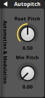
The root pitch property of an autopitch modulator determines the parameter value at which the pitch is not subject to adjustment, while the min pitch property determines the pitch multiplier at the parameter's minimum value. The value of adjustment applied to the pitch property at all other parameter values is based on a linear interpolation between those two known points.
4.13 The Strips View
By default, the event editor window's editor displays the tracks view. This view is useful for creating and editing automation and instruments. The editor can also display the strips view, which can be useful when mixing your event.
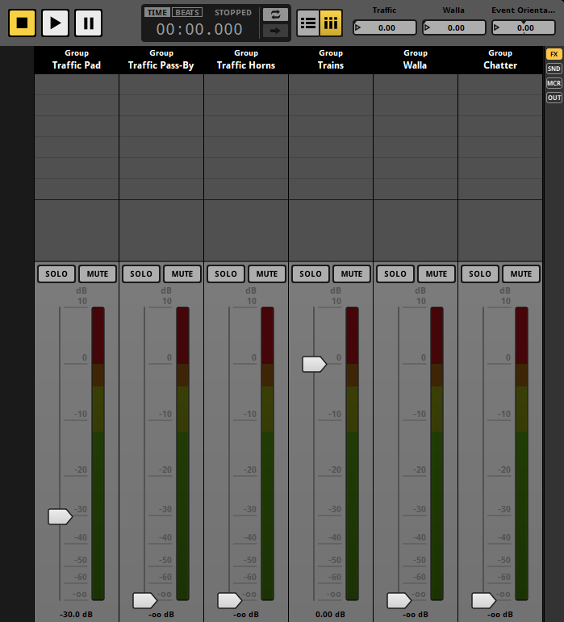
In the strips view, each track other than the master track is displayed as a mixer strip. Because an event instance behaves as a mixer in which every track is a bus, this view allows you to adjust the mix of your event. Adjusting the mix of your event in this way is similar to adjusting the mix of your project in the mixer window. You can switch to the strips view by clicking on the strips button to the right of the follow playback position button in the transport bar.
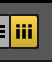
Selecting a strip causes the associated track's signal chain to be displayed in the deck, exactly as if you had selected that track in the tracks view.
The slider on each mixer strip represents a property of the associated track. By default, a mixer strip's slider represents the track's volume, but you can change what it represents by right-clicking on any property dial or number box in the deck and selecting "Flip to Faders" from the context menu.
The mixer view does not allow you to see or edit instruments.
You can switch back to the tracks view by clicking on the tracks button to the right of the loop playback button in the transport bar.
4.14 Bulk Editing Events
When multiple events contain very similar content, it can be useful to edit the content of those events in the same way and at the same time. Bulk editing allows you to do this.
To begin bulk editing, you must first select all the events you want to bulk edit in the events browser. To select multiple events at once, hold down the Ctrl or Shift key when clicking on events.
When multiple events are selected, only one of them is displayed in the event editor window's editor. The name of the currently displayed event is shown in the current editor tab.

You can change which event selected in the events browser is displayed in the editor by pressing the Tab key. Pressing this key repeatedly cycles through all currently selected events. You can also use Shift+Tab to cycle through all currently selected events in reverse order.
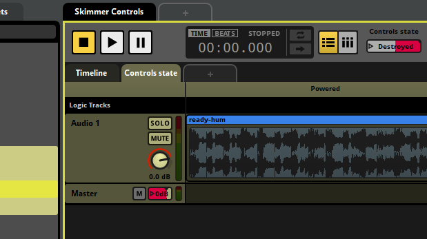
When multiple events are selected, content that's present in all the selected events is displayed with a gold highlight in the editor and the deck. If you change content that's highlighted in gold, that change is applied to all currently selected events, not just the event currently displayed in the editor.
Content that's only in some of the selected events is not highlighted in gold. If you change content that's not highlighted in gold, the change only applies to the event currently displayed in the editor.
FMOD Studio does not currently support bulk editing of instruments or action sheets across multiple events. As a result, instruments are never highlighted in gold when multiple events are selected.
You can enable and disable bulk editing by selecting "View > Bulk Edit with Multi-Selection". When bulk editing is disabled, no event content is highlighted in gold.